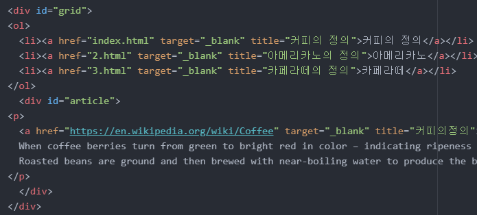
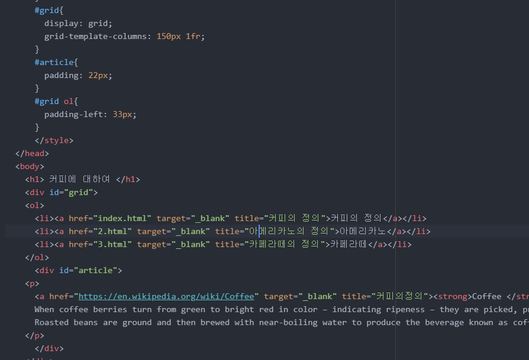

안녕하세요 오늘은 그리드 활용에 대하여 공부해보겠습니다.
요즘 몸이 많이 나른하고 기운이 없네요. 원래 계획은 미친듯이 코딩하는 그런 저를 상상했는데 가면 갈 수록 자신에 대해 실망감이 커져가네요
이런 생각 없어지도록 열심히 해봐야겠습니다.
진도 자체가 다른 분들은 어떤 식으로 나가는지 모르겠지만 저는 한가지를 배우고 그 이론에 대해서 실습하는 시간을 꼭 가져보는 방법을 택했습니다.
제가 하는 방법이 옳은지는 모르겠지만 강의만봐서는 나중에 다 까먹을거같아서요
그래서 하루에 10분도 안되는 강의를 듣더라도 혼자서 코딩하는 시간은 2시간정도 걸리는거같아요
기존에 있던 내용에 추가하는 것보다 제가 처음부터 새로 써내려가는 공부방식으로 하고있습니다.
실습을 하면서 어려웠던 점이 있다면 저는 궁금한 것을 물어볼 곳이 없다라는 점과 새로운 내용을 써내려 갈 콘텐츠가 없다.
이런 점이 어려웠네요ㅋㅋ
아무튼 지금부터 오늘의 grid 활용에 대한 정리를 시작하겠습니다.
topic 10. 그리드 써먹기
내가 당연하다고 생각하고 움직일거라고 예상한 것들이 실제로는 손이 더 필요한 것을 인지하고 코딩을 해야한다.
실습파일을 참고하면 ol로 묶여진 부분과 내용인 콘텐츠를 한 div태그에 위치하고 싶다.
그런데 콘텐츠의 h1태그와 p태그는 다른 태그이기때문에 디자인적으로 묶어줄 수 있는 div태그로 h1과 p태그를 한번 감싸주고
그 뒤에 최종적으로 같은 열에 위치할 태그를 묶어준다.

다시 한번 말하지만 div태그는 정보를 제공하는 태그가 아닌 단순한 디자인적으로 사용되는 태그이다.
id값을 지정하고 display: grid;
grid-template-columns: 150px 1fr;와 같은 방식으로 지정한다.
참고로 columns는 열(가로)이고 rows는 세로(행)이다.
이 후 추가적으로 조사 기능을 활용하여 padding이던 margin이던 원하는 css스타일을 만들어나가면 된다.
새로운 id를 지정하여 적용하여도 되고 id와 태그를 나란히 쓰면 그 id태그를 부모태그로 갖는 자식태그를 지정할 수 있다.
